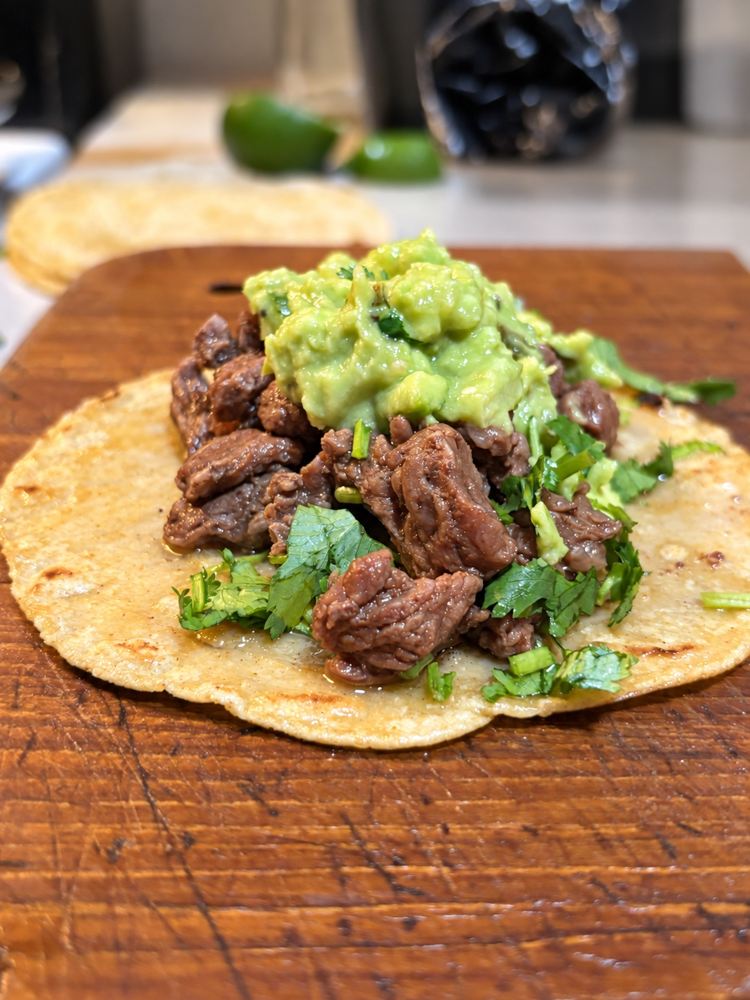

Dos Aztecas recipe
Tacos de
Carne Asada
The real street-taco flavor: citrus-marinated steak, chopped onion, cilantro, and creamy guacamole sauce on warm nixtamal tortillas.

Real street-taco flavorFive simple steps
Directions
- 01
Marinate
Mix the steak with the orange juice, lime juice, garlic, salt, pepper, cumin, chili powder, paprika, oregano, and a few sprinkles of cilantro. Cover and refrigerate for 1–2 hours.
- 02
Prep the toppings
Dice the onion and chop the cilantro. Keep both chilled until serving.
- 03
Blend the sauce
Blend the avocados, lime juice, cilantro, garlic, sour cream, salt, and a splash of water until smooth.
- 04
Grill + chop
Grill the steak over medium heat for 10–15 minutes, turning with tongs. Cook to 145°F, rest for 3 minutes, then chop into small pieces.
- 05
Warm + fill
Warm the Dos Aztecas tortillas on a pan or comal. Fill with steak, cilantro, onion, and guacamole sauce.
Taste the difference: Our nixtamal tortillas bring the warm corn aroma, flexibility, and flavor a real carne asada taco deserves.
The finishing touch